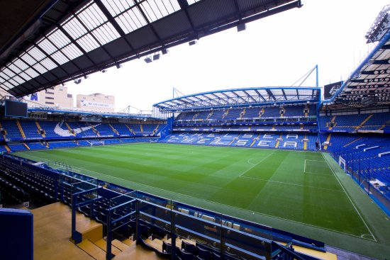

Chelsea haven't used any other stadium since Stamford Bridge. Stamford Bridge was first opened on April 28, 1877, and has been used as a comprehensive sports ground for the London Athletics Club for 28 years. In 1904, businessman Gus Mears and his brother, Joseph Meers, bought a playground and an area of 51,000 m² and wanted to play a football game. The brothers asked Archibald Rich, the architect of Celtic Park, to design the new stadium. Unlike most football teams who first created the stadium and then the stadium, Chelsea created the team for the Stamford Bridge. Stamford Bridge's rights to property rights, soccer fields, wickets and Chelsea's club title are currently owned by Chelsea Pitch Owners, a non-profit organization in which fans share a stake. The CPO was formed in 1993 to ensure that the stadium is not passed on to real estate developers again. They also have the principle that, as long as they use the name Chelsea, teams must play at Stamford Bridge and return their names if they move.
